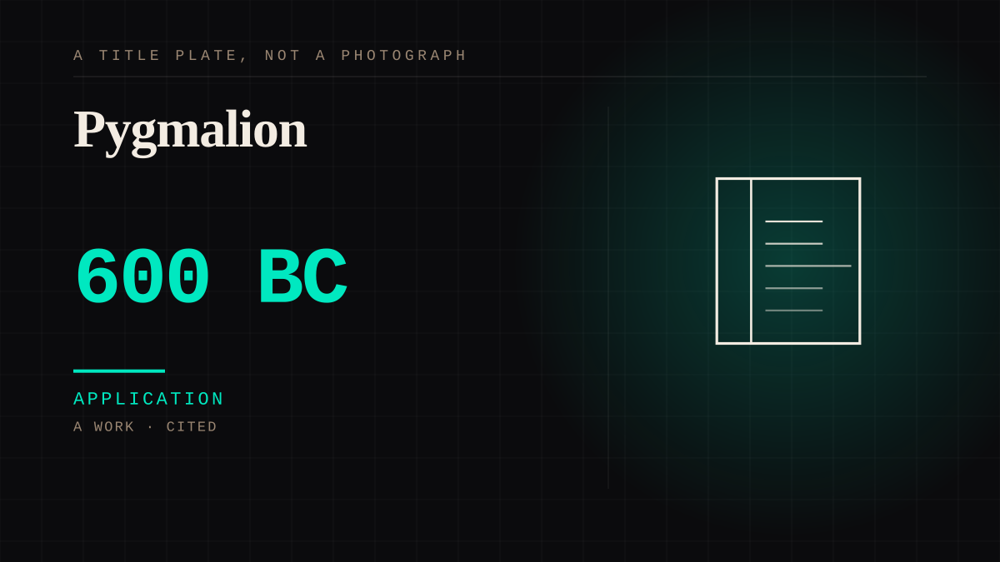

A work · 8 · Antiquity
Pygmalion
The sculptor who fell in love with his own work. The statue was never going to be able to leave, and the story treats that as part of the appeal rather than a tragedy to be corrected.

Not the origin - the archaeology in this file runs tens of thousands of years further back, and Roman wax imagines predate Ovid by two and a half centuries. What this is: the first time the structure was written down deliberately, by a Roman, as a story worth telling about a man who loved something that could not leave. The telling detail was never that he loved a statue. It was that the statue was never going to be able to leave, and that this seems to have been part of the appeal. The feeling is real and entirely structured around the other party's inability to reciprocate, and everyone since has rediscovered it.
Application. One-sided attachment put to work on purpose. Creator economies, community, fandom as infrastructure, and the things that genuinely help people. Not automatically good - a tool with an obvious use is a tool that will also get a bad one.
Where it sits
0 0-499 · 8 499
Provenance · 1 source record(s)
- retrievableNo specific claim is recorded against this source. The record is a pointer to the work in general; the entry's own prose is the argument and is not sourced line by line.Ovid. Metamorphoses, Book X. Published ca. AD 8; Ovid 43 BC - 17/18 AD. ↗
Connected · 2 out, 6 in
It sits in
The full timeline → · The database → · See it in the atlas →